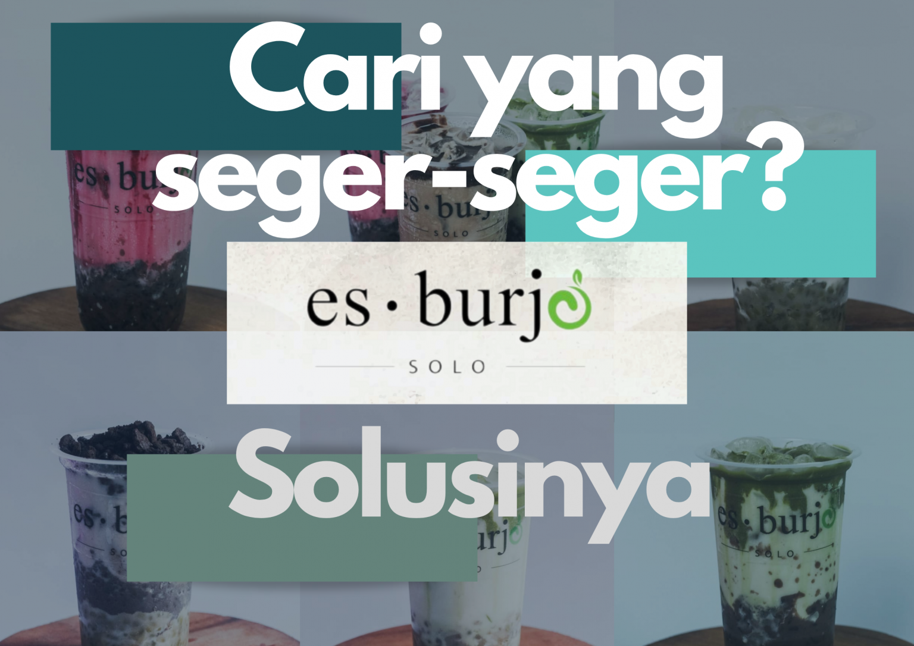

"Rasakan Kelezatan Minuman Kekinian Es Burjo Solo dengan Varian Rasa yang Lezat"
Siapa yang tidak mengenal Es Burjo Solo? Minuman kekinian ini menjadi salah satu minuman favorit di Solo. Es Burjo Solo dikenal dengan kelezatan dan keunikan rasanya. Tidak hanya itu, minuman ini juga dilengkapi dengan berbagai topping yang membuatnya semakin lezat.
Es Burjo Solo merupakan minuman kekinian yang terkenal dan menjadi favorit di Solo. Minuman ini dikenal karena kelezatan dan keunikan rasanya, serta dilengkapi dengan berbagai topping yang membuatnya semakin lezat. Es Burjo Solo menawarkan varian rasa yang beragam, mulai dari cokelat, stroberi, vanilla, green tea, dan lainnya. Rasakan sensasi segarnya dan nikmati setiap tegukan yang lezat.
Es Burjo Solo tidak hanya menawarkan kelezatan rasa, tetapi juga memiliki berbagai topping yang unik. Anda dapat memilih topping seperti kacang hijau, tape ketan hitam, nata de coco, biji selasih, dan lainnya. Topping ini memberikan sensasi kenyal dan menambahkan rasa yang berbeda pada minuman ini. Nikmati keunikan dan lezatnya Es Burjo Solo dengan topping pilihan Anda.
Es Burjo Solo tidak hanya enak, tetapi juga memberikan manfaat kesehatan. Bahan-bahan yang digunakan, seperti kacang hijau, tape ketan hitam, dan nata de coco, mengandung nutrisi penting seperti serat, protein, vitamin, dan mineral. Selain itu, Es Burjo Solo juga memiliki kemasan praktis dan ramah lingkungan. Anda dapat menikmati minuman ini di gerai terdekat atau melalui aplikasi pengiriman makanan online favorit Anda. Jadi, jangan ragu untuk mencoba Es Burjo Solo yang lezat, sehat, dan ramah lingkungan ini.